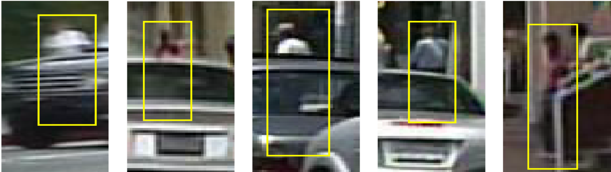
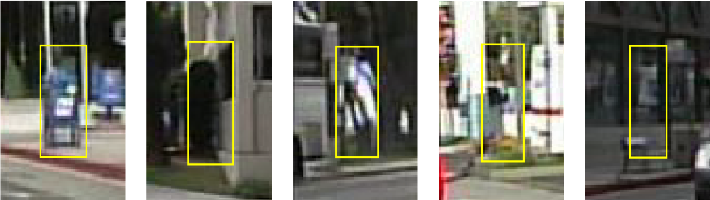
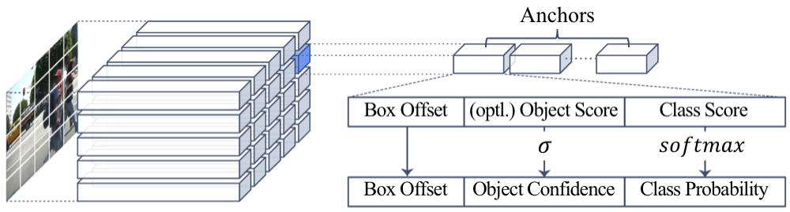
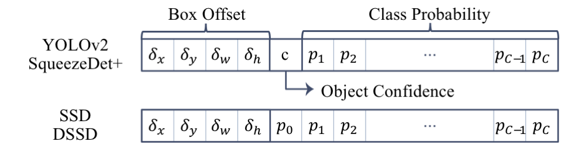

We propose methods of addressing two critical issues of pedestrian detection: (i) occlusion of target objects as false negative failure, and (ii) confusion with hard negative examples like vertical structures as false positive failure. Our solutions to these two problems are general and flexible enough to be applicable to any single-stage detection models. Specifically, our two solutions are as follows. For better occlusion handling, we update the output tensors of single-stage models so that they include the prediction of part confidence scores, from which we compute a final occlusion-aware detection score. For reducing confusion with hard negative examples, we introduce average grid classifiers as post-refinement classifiers, trainable in an end-to-end fashion with little memory and time overhead.
Among many error sources of pedestrian detection, we are interested in two critical issues: (i) occlusion of target objects (as false negative failure cases), and (ii) confusion with hard negative examples (as false positive failures). First, occlusion is one of key practical difficulties in pedestrian detection, because real world scenes like street are often crowded with many people and various objects; thus observation with occlusion is much more common than that without occlusion. Second, in the scenes for pedestrian detection, there are many hard negative examples like vertical structures, trees, and traffic lights, because of which, models detect a lot of false positives, and they amount to a large portion of overall errors.
|

(a) Occlusion examples |

(b) Hard negative examples |
The single-stage models formulates the two stages of region proposal and classification into a single-stage regression problem to detect objects extremely fast. Starting from YOLO, more advanced models are emerging, including SqueezeDet+, YOLOv2, SSD, and DSSD. They all use a convolutional predictor to generate the final output tensor which contains values about box coordinates and class probabilities.
|

(a) Structure of the output tensor |

(b) Output formats of four methods per anchor |
Our solution is to add auxiliary modules and corresponding tasks. Therefore, our solution can be integrated with virtually any kind of single-stage detectors and is trainable end-to-end. Also, the auxiliary modules require little overhead in terms of memory and computation time.
The first task is specifically aimed at occlusion handling. We found that detectors tend to assign low confidence for occluded pedestrians. To handle this issue, our additional module predicts multiple confidence scores for each part instead of a single confidence score. We divide the bounding box area to \(6 \times 3\) grid and train our module to predict whether each region is a visible area of a pedestrian. But this objective requires visible area annotations, in addition to the ordinary bounding boxes. Luckily, Caltech Pedestrian Dataset and CityPersons Dataset contain exactly that kind of annotations, so we used those datasets.
We further process this part confidence map with some part score generator to build part score and use the geometric mean of the initial confidence and part score as the final confidence. We tested two types of part score: max part score and soft part score. The first one simply max pool the part confidences. The intuition is that if some part seems to be a pedestrian, it is an occluded pedestrian and therefore, the score should be high. But max pooling might be too simple to utilize the patterns of occlusion. So, the second method is to pass the grid through a multi-layer perceptron with a single hidden layer and let it capture the plausible occlusion pattern. After we get this part score, we use it to refine the initial confidence.
The second task is about handling hard negatives. We add multiple classification layers to the lower layers with different resolutions. In each grid cell, the classifiers predict whether the grid area belongs to a pedestrian or not. In some sense, it is like segmentation task with chunky labels. The results of the grid classifications are called grid confidence map. To use these grid confidence maps to refine detection results, we first upsample each confidence map to the pixel level and average the confidence maps. Then, for each bounding box \(k\), the confidences in the bounding box area are averaged to build confidence score \(s_k\). Finally, we adjust the initial confidence by taking the geometric mean of initial confidence and confidence score \(s_k\).
The authors would like to thank Yunseok Jang and Juyong Kim for helpful discussions, as well as Sukyung Jeong for assisting to draw the figures in the paper. This work was supported by Samsung Research Funding Center of Samsung Electronics under Project Number SRFC-TC1603-01. Gunhee Kim is the corresponding author.
@inproceedings{Noh:2018:PartGridNet,
author = {Noh, Junhyug and Lee, Soochan and Kim, Beomsu and Kim, Gunhee},
title = {{Improving Occlusion and Hard Negative Handling for Single-Stage Pedestrian Detectors}},
booktitle = {The IEEE Conference on Computer Vision and Pattern Recognition (CVPR)},
month = {June},
year = {2018}
}